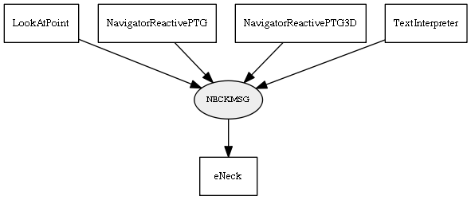

Global overview
All modules
All variables
All commands
Mission files
Pipelines
Variable: NECKMSG
Variable info:
Variable name
Short description
Who publishes it?
Who subscribes to it?
NECKMSG
The Neck position to achieve
LookAtPoint
NavigatorReactivePTG
NavigatorReactivePTG3D
TextInterpreter
eNeck
Variable graph:

Detailed description:
The Neck position to achieveUsing an unsorted list notation:
S = index of the servo (0 or 1)
A = angle in degrees
SP = speed of the servo (from 15º/s to 250º/s approx)
FI = 1:enable filtering, 0:no filter of subsequent angle commands.
Page generated by
Mooxygen 1.1.0
at Thu Jan 22 11:30:21 2015